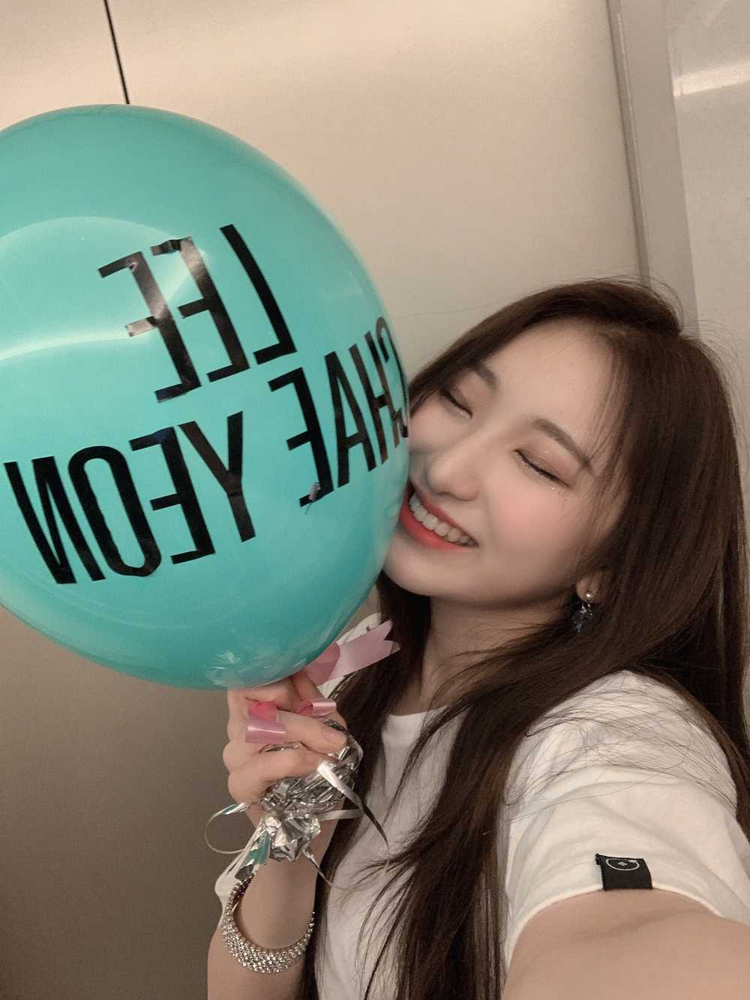
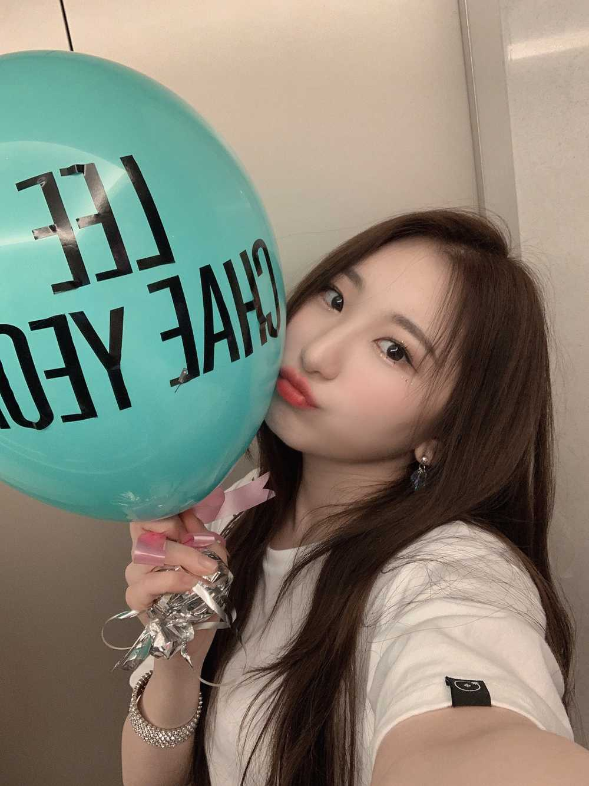
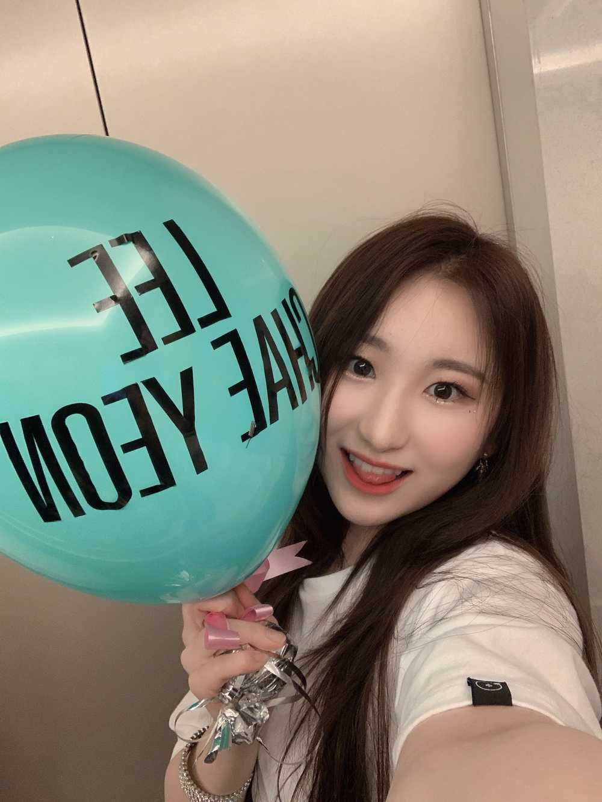

태국에서의 콘서트를 마치구..
멀리 있어도 마음은 가까이 있다는 걸
느끼게 해 준하 루였어요..
정말 아쉬운 건 내가 태국어를 못한다는 점이예요.
제 진심을 제 입으로 직접 말하고 싶었어요.
정말 7개 국어 하고 싶을 정도로..
또 다시 오면 반겨주실건가요? 라는 민주의 질문에
정말 해맑고 크고 밝게 “네” 라고 해주셔서
감사했습니다.
눈빛 하나하나 정말 잊지 못할 거같아요.
과분한 사랑 주신 만큼 위즈원을 더 소중하게 생각하고
위즈원에게 아낌없는 사랑과 에너지를 드리고 싶습니다:)
아이즈원 멤버들도 서로 소중히 생각하고 의지하구
애틋한마음으로 정말 친하게 잘 지내고 있어요ㅎㅎ
위즈원과 아이즈원 멤버들이 있으니까
무엇이든 다 해낼 수 있을거 같은 느낌이예요!!
저희의 애정과 열정이 시너지가 되어
위즈원에게 12개의 별을 마음에 심어주고싶습니다ㅎㅎ
태국위즈원!! 하루였지만..같이 있었던 시간
행복했어요!! 우리 다시 만나요💋

